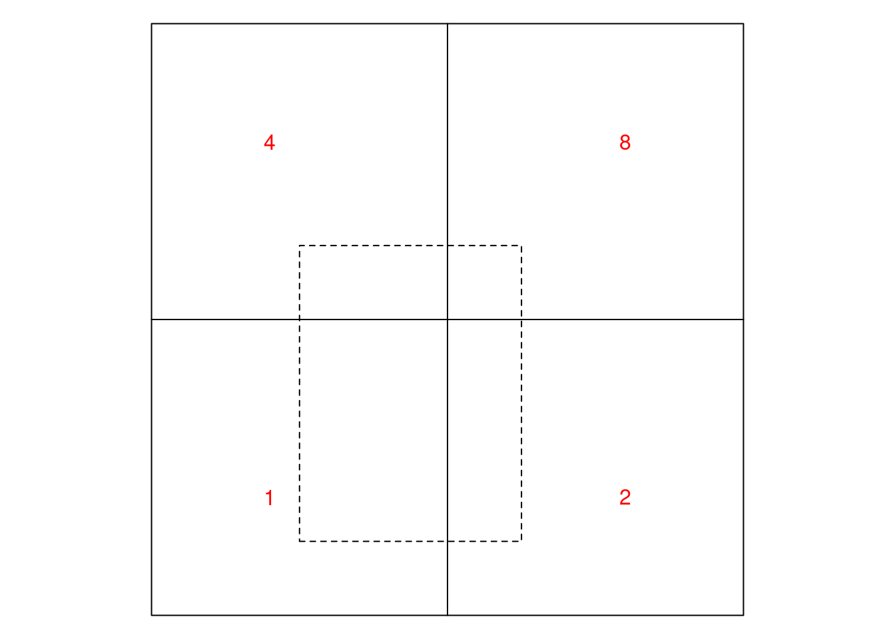

Feature attributes refer to the properties of features (“things”) that do not describe the feature’s geometry. Feature attributes can be derived from geometry (e.g. length of a LINESTRING, area of a POLYGON) but they can also refer to non-derived properties, such as:
the name of a street or a county
the number of people living in a country
the type of a road
the soil type in a polygon from a soil map
the opening hours of a shop
the body weight or heart beat rate of an animal
the NO\(_2\) concentration measured at an air quality monitoring station
In some cases, time properties can be seen as attributes of features, e.g. the date of birth of a person or the construction year of a road. When an attribute such as for instance air quality is a function of both space and time, time is best handled on equal footing with geometry (e.g. in a data cube, see Chapter 6).
Spatial data science software implementing simple features typically organizes data in tables that contain both geometries and attributes for features; this is true for geopandas in Python, PostGIS tables in PostgreSQL, and sf objects in R. The geometric operations described in Section 3.2 operate on geometries only, and may occasionally yield new attributes (predicates, measures or transformations), but do not operate on attributes present.
When, while manipulating geometries, attribute values are retained unmodified, support problems may arise. If we look into a simple case of replacing a county polygon with the centroid of that polygon on a dataset that has attributes, we see that R package sf issues a warning:
Code
suppressPackageStartupMessages(library(sf))suppressPackageStartupMessages(library(dplyr))system.file("gpkg/nc.gpkg", package="sf") |>read_sf() |>st_transform(32119) |>select(BIR74, SID74, NAME) |>st_centroid() -> x# Warning in# st_centroid.sf(select(st_transform(read_sf(system.file("gpkg/# nc.gpkg", : st_centroid assumes attributes are constant over# geometries of x
The reason for this is that the dataset contains variables with values that are associated with entire polygons – in this case: population counts – meaning they are not associated with a POINT geometry replacing the polygon.
In Section 1.6 we already described that for non-point geometries (lines, polygons), feature attribute values either have point support, meaning that the value applies to every point, or they have block support, meaning that the value summarizes all points in the geometry. (More complex options, e.g. in between these two extremes, may also occur.) This chapter will describe different ways in which an attribute may relate to the geometry, its consequences on analysing such data, and ways to derive attribute data for different geometries (up- and downscaling).
5.1 Attribute-geometry relationships and support
Changing the feature geometry without changing the feature attributes does change the feature, since the feature is characterised by the combination of geometry and attributes. Can we, ahead of time, predict whether the resulting feature will still meaningfully relate to the attribute value when we replace all geometries for instance with their convex hull or centroid? It depends.
Take the example of a road, represented by a LINESTRING, which has an attribute property road width equal to 10 m. What can we say about the road width of an arbitrary subsection of this road? That depends on whether the attribute road length describes, for instance the road width everywhere, meaning that road width is constant along the road, or whether it describes an aggregate property, such as minimum or average road width. In case of the minimum, for an arbitrary subsection of the road one could still argue that the minimum road width must be at least as large as the minimum road width for the whole segment, but it may no longer be the minimum for that subsection. This gives us two “types” for the attribute-geometry relationship (AGR):
constant the attribute value is valid everywhere in or over the geometry; we can think of the feature as consisting of an infinite number of points that all have this attribute value; in the geostatistical literature this is known as a variable with point support
aggregate the attribute is an aggregate, a summary value over the geometry; we can think of the feature as a single observation with a value that is associated with the entire geometry; this is also known as a variable having block support
For polygon data, typical examples of constant AGR (point support) variables are:
land use for a land use polygon
rock units or geologic strata in a geological map
soil type in a soil map
elevation class in a elevation map that shows elevation as classes
climate zone in a climate zone map
A typical property of such variables is that they have geometries that are not man-made and also not associated with a sensor device (such as remote sensing image pixel boundaries). Instead, the geometry follows from the variable observed.
Examples for the aggregate AGR (block support) variables are:
population, either as number of persons or as population density
other socio-economic variables, summarised by area
average reflectance over a remote sensing pixel
total emission of pollutants by region
block mean NO\(_2\) concentrations, as e.g. obtained by block kriging over square blocks or a dispersion model that predicts areal means
A typical property of such variables is that associated geometries come for instance from legislation, observation devices or analysis choices, but not intrinsically from the observed variable.
A third type of AGR arises when an attribute identifies a feature geometry; we call an attribute an identity variable when the associated geometry uniquely identifies the variable’s value (there are no other geometries with the same value). An example is county name: the name identifies the county, and is still the county for any sub-area (point support), but for arbitrary sub-areas, the attributes loses the identity property to become a constant attribute. An example is:
an arbitrary point (or region) inside a county is still part of the county and must have the same value for county name, but it does not longer identify the (entire) geometry corresponding to that county
The challenge here is that spatial information (ignoring time for simplicity) belongs to different phenomena types (e.g. Scheider et al. 2016), including:
fields: where over continuous space, every location corresponds to a single value, e.g. elevation, air quality, or land use
objects: found at a discrete set of locations, e.g. houses or persons
aggregates: e.g. sums, totals, averages of fields, counts or densities of objects, associated with lines or regions
but that different spatial geometry types (points, lines, polygons, raster cells) have no simple mapping to these phenomena types:
points may refer to sample locations of observations on fields (air quality) or to locations of objects
lines may be used for objects (roads, rivers), contours of a field, or administrative borders
raster pixels and polygons may reflect fields of a categorical variable such as land use (coverage), but also aggregates such as population density
Properly specifying attribute-geometry relationships, and warning against their absence or cases when change in geometry (change of support) implies a change of information can help avoiding a large class of common spatial data analysis mistakes (Stasch et al. 2014) associated with the support of spatial data.
5.2 Aggregating and summarising
Aggregating records in a table (or data.frame) involves two steps:
grouping records based on a grouping predicate, and
applying an aggregation function to the attribute values of a group to summarize them into a single number.
In SQL, this looks for instance like
SELECT GroupID, SUM(population) FROM table GROUP BY GroupID;
indicating the aggregation function (SUM) and the grouping predicate (GroupID).
R package dplyr for instance uses two steps to accomplish this: function group_by specifies the group membership of records, summarize computes data summaries (such as sum or mean) for each of the groups. R (base) function aggregate does both in a single function that takes the data table, the grouping predicate(s) and the aggregation function.
An example for the North Carolina counties is shown in Figure 5.1. Here, we grouped counties by their position (according to the quadrant in which the county centroid is with respect to ellipsoidal coordinate POINT(-79, 35.5)) and counted the number of disease cases per group. The result shows that the geometries of the resulting groups have been unioned (Section 3.2.6): this is necessary because the MULTIPOLYGON formed by just putting all the county geometries together would have many duplicate boundaries, and hence not be valid (Section 3.1.2).
Code
nc <-read_sf(system.file("gpkg/nc.gpkg", package ="sf"))# encode quadrant by two logicals:nc$lng <-st_coordinates(st_centroid(st_geometry(nc)))[,1] >-79nc$lat <-st_coordinates(st_centroid(st_geometry(nc)))[,2] >35.5nc.grp <-aggregate(nc["SID74"], list(nc$lng, nc$lat), sum)plot(nc.grp["SID74"], axes =TRUE)
Figure 5.1: SID74 counts by county quadrant, with county polygons unioned by county quadrant
Plotting collated county polygons is technically not a problem, but for this case would raise the wrong suggestion that the group sums relate to the counties, and not the group of counties.
One particular property of aggregation in this way is that each record is assigned to a single group; this has the advantage that the sum of the group-wise sums equals the sum of the ungrouped data: for variables that reflect amount, nothing gets lost and nothing is added. The newly formed geometry is the result of unioning the geometries of the records.
Figure 5.2: example target blocks layed out over North Carolina counties
When we need an aggregate for a new area that is not a union of the geometries for a group of records, and we use a spatial predicate then single records may be matched to multiple groups. When taking the rectangles of Figure 5.2 as the target areas, and summing for each rectangle the disease cases of the counties that intersect with the rectangles of Figure 5.2 , the sum of these will be much larger:
Choosing another predicate, e.g. contains or covers would on the contrary result in much smaller values, because many counties are not contained by any the target geometries. However, there are a few cases where this approach might be good or satisfactory:
when we want to aggregate POINT geometries by a set of polygons, and all points are contained by a single polygon. If points fall on a shared boundary than they are assigned to both polygons (this is the case for DE-9IM-based GEOS library; the s2geometry library has the option to define polygons as “semi-open”, which implies that points are assigned to single polygons when the polygons form a coverage)
when aggregating many very small polygons or raster pixels over larger areas, e.g. averaging altitude from 30 m resolution raster over North Carolina counties, the error made by multiple matches may be insignificant
A more comprehensive approach to aggregating spatial data associated to areas to larger, arbitrary shaped areas is by using area-weighted interpolation.
5.3 Area-weighted interpolation
When we want to combine geometries and attributes of two datasets such that we get attribute values of a source dataset summarised for the geometries of a target, where source and target geometries are unrelated, area-weighted interpolation may be a simple approach. In effect, it considers the area of overlap of the source and target geometries, and uses that to weight the source attribute values into the target value (Goodchild and Lam 1980; Do, Thomas-Agnan, and Vanhems 2015a, 2015b; Do, Laurent, and Vanhems 2021). Here, we follow the notation of Do, Thomas-Agnan, and Vanhems (2015b).
Area-weighted interpolation computes, for each of \(q\) spatial target areas \(T_j\), a weighted average from the values \(Y_i\) corresponding to the \(p\) spatial source areas \(S_i\),
where the \(w_{ij}\) depend on the amount of overlap of \(T_j\) and \(S_i\), and the amount of overlap is \(A_{ij} = T_j \cap S_i\). How \(w_{ij}\) depends on \(A_{ij}\) is discussed below.
Different options exist for choosing weights, including methods using external variables (e.g. dasymetric mapping, Mennis (2003)). Two simple approaches for computing weights that do not use external variables arise, depending on whether the variable \(Y\) is intensive or extensive.
Spatially extensive and intensive variables
An example of a extensive variable is population count. It is associated with an area, and if that area is cut into smaller areas, the population count is split accordingly: not necessary proportional to area, because population is rarely uniform, but split in such a way that the sum of the population count for the smaller areas equals that of the total. An example of a related variable that is intensive is population density. If an area is split into smaller areas, population density is not split similarly: the sum of the population densities for the smaller areas is a meaningless measure, as opposed to the average of the population densities which will be similar to the density of the total area.
Extensive variables correspond to amounts, associated with a physical size (length, area, volume); for spatially extensive variables, if the area a value corresponds to is cut in parts, the values associated with the sub-area are split accordingly. In other words: the value is proportional to the support. Intensive variables are variables that do not have values proportional to support: if the area is split, values may vary but on average remain the same. The corresponding example of an intensive variable is population density: when we split an area into sub-areas, the sub-areas either have identical population densities (in case population is uniformly distributed) or, more realistically, have varying population densities that by necessity are both higher and lower than the density of the total area.
When we assume that the extensive variable \(Y\) is uniformly distributed over space, the value \(Y_{ij}\), derived from \(Y_i\) for a sub-area of \(S_i\), \(A_{ij} = T_j \cap S_i\) of \(S_i\) is
For an intensive variable, under the assumption that the variable has a constant value over each area \(S_i\), the estimate for a sub-area equals that of the total,
\[\hat{Y}_{ij} = Y_i(S_i)\]
and we can estimate the value of \(Y\) for a new spatial unit \(T_j\) by an area-weighted average of the source values:
Dasymetric mapping distributes variables, such as population, known at a coarse spatial aggregation level over finer spatial units by using other variables that are associated with population distribution, such as land use, building density, or road density. The simplest approach to dasymetric mapping is obtained for extensive variables, where the ratio \(|A_{ij}| / |S_i|\) in (Equation 5.2) is replaced by the ratio of another extensive variable \(X_{ij}(S_{ij})/X_i(S_i)\), which has to be known for both the intersecting regions \(S_{ij}\) and the source regions \(S_i\). Do, Thomas-Agnan, and Vanhems (2015b) discuss several alternatives for intensive \(Y\) and/or \(X\), and cases where \(X\) is known for other areas.
Support in file formats
GDAL’s vector API supports reading and writing so-called field domains, which can have a “split policy” and a “merge policy” indicating what should be done with attribute variables when geometries are split or merged. The values of these can be “duplicate” for split and “geometry weighted” for merge, in case of spatially intensive variables, or they can be “geometry ratio” for split and “sum” for merge, in case of spatially extensive variables. At the time of writing this, the file formats supporting this are GeoPackage and FileGDB.
5.4 Up- and Downscaling
Up- and downscaling refers in general to obtaining high-resolution information from low-resolution data (downscaling) or obtaining low-resolution information from high-resolution data (upscaling). Both are activities involve attributes’ relation to geometries and both change support. They are synonymous with aggregation (upscaling) and disaggregation (downscaling).
The simplest form of downscaling is sampling (or extracting) polygon, line or grid cell values at point locations. This works well for variables with point-support (“constant” AGR), but is at best approximate when the values are aggregates.
Challenging applications for downscaling include high-resolution prediction of variables obtained by low-resolution weather prediction models or climate change models, and the high-resolution prediction of satellite image derived variables based on the fusion of sensors with different spatial and temporal resolutions.
The application of areal interpolation using (Equation 5.1) with its realisations for extensive (Equation 5.2) and intensive (Equation 5.3) variables allows moving information from any source area \(S_i\) to any target area \(T_j\) as long as the two areas have some overlap. This means that one can go arbitrarily to much larger units (aggregation) or to much smaller units (disaggregation). Of course this makes only sense to the extent that the assumptions hold: over the source regions extensive variables need to be uniformly distributed and intensive variables need to have constant value.
The ultimate disaggregation involves retrieving (extracting) point values from line or area data. For this, we cannot work with equations (Equation 5.2) or (Equation 5.3) because \(|A_{ij}| = 0\) for points, but under the assumption of having a constant value over the geometry, for intensive variables the value \(Y_i(S_i)\) can be assigned to points as long as all points can be uniquely assigned to a single source area \(S_i\). For polygon data, this implies that \(Y\) needs to be a coverage variable (Section 3.4).
In cases where values associated with areas are aggregate values over the area, the assumptions made by area-weighted interpolation or dasymetric mapping – uniformity or constant values over the source areas – are highly unrealistic. In such cases, these simple approaches still be reasonable approximations, for instance when:
the source and target area are nearly identical
the variability inside source units is very small, and the variable is nearly uniform or constant
In other cases, results obtained using these methods are merely consequences of unjustified assumptions. Statistical aggregation methods that can estimate quantities for larger regions from points or smaller regions include:
design-based methods, which require that a probability sample is available from the target region, with known inclusion probabilities (Brus (2021), Section 10.1), and
model-based methods, which assume a random field model with spatially correlated values (block kriging, Section 12.5)
Alternative disaggregation methods include:
deterministic, smoothing-based approaches such as kernel- or spline-based smoothing methods (Tobler 1979; Martin 1989)
statistical, model-based approaches: area-to-area and area-to-point kriging (Kyriakidis 2004; Raim et al. 2021).
## Exercises
Where relevant, try to make the following exercises with R.
When we add a variable to the nc dataset by nc$State = "North Carolina" (i.e., all counties get assigned the same state name). Which value would you attach to this variable for the attribute-geometry relationship (agr)?
Create a new sf object from the geometry obtained by st_union(nc), and assign "North Carolina" to the variable State. Which agr can you now assign to this attribute variable?
Use st_area to add a variable with name area to nc. Compare the area and AREA variables in the nc dataset. What are the units of AREA? Are the two linearly related? If there are discrepancies, what could be the cause?
Is the area variable intensive or extensive? Is its agr equal to constant, identity or aggregate?
Consider Figure 5.3 ; using the equations in Section 5.3.1, compute the area-weighted interpolations for (a) the dashed cell and (b) for the square enclosing all four solid cells, first for the case where the four cells represent (i) an extensive variable, and (ii) an intensive variable. The red numbers are the data values of the source areas.
Code
g <-st_make_grid(st_bbox(st_as_sfc("LINESTRING(0 0,1 1)")), n =c(2,2))par(mar =rep(0,4))plot(g)plot(g[1] *diag(c(3/4, 1)) +c(0.25, 0.125), add =TRUE, lty =2)text(c(.2, .8, .2, .8), c(.2, .2, .8, .8), c(1,2,4,8), col ='red')

Figure 5.3: example data for area-weighted interpolation
Brus, Dick J. 2021. “Statistical Approaches for Spatial Sample Survey: Persistent Misconceptions and New Developments.”European Journal of Soil Science 72 (2): 686–703. https://doi.org/https://doi.org/10.1111/ejss.12988.
Do, Van Huyen, Thibault Laurent, and Anne Vanhems. 2021. “Guidelines on Areal Interpolation Methods.” In Advances in Contemporary Statistics and Econometrics: Festschrift in Honor of Christine Thomas-Agnan, edited by Abdelaati Daouia and Anne Ruiz-Gazen, 385–407. Cham: Springer International Publishing. https://doi.org/10.1007/978-3-030-73249-3_20.
Do, Van Huyen, Christine Thomas-Agnan, and Anne Vanhems. 2015a. “Accuracy of Areal Interpolation Methods for Count Data.”Spatial Statistics 14: 412–38. https://doi.org/10.1016/j.spasta.2015.07.005.
Goodchild, Michael F, and Nina Siu Ngan Lam. 1980. Areal Interpolation: A Variant of the Traditional Spatial Problem. Department of Geography, University of Western Ontario London, ON, Canada.
Kyriakidis, P. C. 2004. “A Geostatistical Framework for Areal-to-Point Spatial Interpolation.”Geographical Analysis 36: 259–89.
Martin, D. 1989. “Mapping Population Data from Zone Centroid Locations.”Transactions of the Institute of British Geographers, New Series 14: 90–97.
Mennis, Jeremy. 2003. “Generating Surface Models of Population Using Dasymetric Mapping.”The Professional Geographer 55 (1): 31–42.
Raim, A. M., S. H. Holan, J. R. Bradley, and C. K. Wikle. 2021. “Spatio-Temporal Change of Support Modeling with r.”Computational Statistics 36: 749–80. https://doi.org/https://doi.org/10.1007/s00180-020-01029-4 .
Scheider, Simon, Benedikt Gräler, Edzer Pebesma, and Christoph Stasch. 2016. “Modeling Spatiotemporal Information Generation.”International Journal of Geographical Information Science 30 (10): 1980–2008. https://doi.org/10.1080/13658816.2016.1151520.
Stasch, Christoph, Simon Scheider, Edzer Pebesma, and Werner Kuhn. 2014. “Meaningful Spatial Prediction and Aggregation.”Environmental Modelling & Software 51: 149–65. https://doi.org/10.1016/j.envsoft.2013.09.006.
Tobler, W. R. 1979. “Smooth Pycnophylactic Interpolation for Geographical Regions.”Journal of the American Statistical Association 74: 519–30.